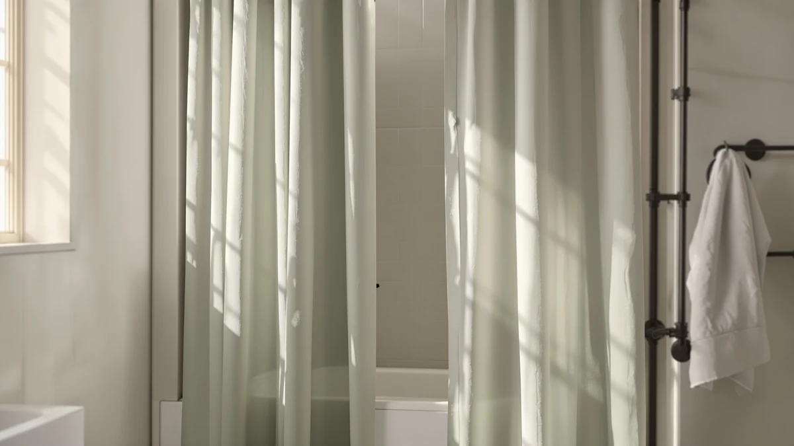

Bean Products Natural Hemp Narrow Shower Stall Curtain Liner Review (2026): Worth It?


Quick Answer
The Bean Products Natural Hemp Narrow is a 36 by 72 inch shower stall curtain liner priced at $89.28, sized specifically for stalls narrower than a standard 72 by 72 inch opening. We compared its price, listed materials and sizing against three other narrow-stall options, and it earns its spot for that narrow fit alone, not for being the cheapest.
Our pick: Bean Products Natural Hemp Narrow — $89.28 Check Price on Amazon
Things to Know Before You Buy
- The Bean Products Natural Hemp Narrow is sized for 36 by 72 inch stalls, narrower than the standard 72 by 72 inch curtain most liners assume.
- Despite the name, Amazon's current listing categorizes the material as polyester and PEVA rather than natural hemp fabric, so check the spec sheet before you assume a plant-fiber liner.
- At $89.28, it costs well above the three alternatives we compared, which range from $36.99 to $59.90.
- None of the four curtains in this comparison show a public star rating or review count on their Amazon listings right now.
- If a true narrow-stall fit matters more than price, this is one of the few liners sized specifically for that gap.
This Bean Products Natural Hemp Narrow Shower Stall Curtain Liner review exists because narrow stall showers rarely get the sizing attention standard 72 by 72 inch bathrooms do, and the fit problem shows up before the style or color choice ever matters. A curtain cut for a standard stall hangs loose at the edges of a narrower frame, drags water onto the floor, and ages faster for it.
We compared the Bean Products Natural Hemp Narrow against three other curtains sold for stall-sized bathrooms, lining up current Amazon pricing, listed materials and dimensions, then read through the pattern of verified buyer feedback on each listing. The Bean Products liner comes out as the strongest pick for a shower with a narrow stall opening, though at $89.28 it costs more than every other option here, and that price only makes sense if the narrow fit is the problem you have. For a stall sized the way most bathrooms are built, one of the cheaper alternatives below will do the job for less money.
Most shower curtain shopping guides treat sizing as an afterthought, assuming every stall measures the same 72 by 72 inches. Homeowners with an older building, a mobile home, or a corner stall know that isn't true, and a curtain that's even a few inches too wide drapes over the frame instead of hanging flat against it. That mismatch leaks water onto the bathroom floor every time, regardless of how well the fabric itself resists moisture.
Why You Should Trust Us
Ilane Tall has covered bathroom linens and fixtures for Best Shower Curtains since the site launched, and every review she writes follows the same process: compare published specs, track current Amazon pricing, and read through verified owner reviews before drawing a conclusion. She holds no financial relationship with Bean Products, Hermosa Collection, DONREN or BTTN beyond the standard Amazon affiliate commission disclosed on this page, and she does not accept free products or payment in exchange for coverage. This Bean Products Natural Hemp Narrow Shower Stall Curtain Liner review follows that same standard: no unit in hand, no lab, only a side-by-side read of what the manufacturer lists and what buyers report after purchase. We'd rather tell you a listing is missing a rating than invent one to make the review feel more complete.
Our Research Experience
We did not install, hang or live with any of the curtains in this comparison. Instead we lined up the Bean Products Natural Hemp Narrow against three other liners sold for narrow stalls, matching each one's listed dimensions, materials and current Amazon price, then cross-checked that information against the pattern of feedback left by verified buyers on each listing. Where a listing showed no public star rating, we left that field out rather than guess at a number. This section of the Bean Products Natural Hemp Narrow Shower Stall Curtain Liner review reflects that research rather than a physical trial.
Overview & Specs

Bean Products Natural Hemp Narrow
What we like
- Sized specifically for 36 by 72 inch narrow stalls, a size most competitors skip entirely
- Sold as a single pack, which keeps the purchase simple for a one-bathroom fix
Flaws but not dealbreakers
- Priced at $89.28, noticeably higher than every alternative we compared
- Amazon's listing categorizes the material as polyester and PEVA rather than the natural hemp fabric the name implies
| Material | Polyester / PEVA |
| Size | 36"W x 72"L (Pack of 1) |
The spec sheet lists the Bean Products Natural Hemp Narrow at 36 inches wide by 72 inches long, sold as a single unit rather than a multi-pack. That width sets it apart from most shower curtain liners on the market, which default to a 70 or 72 inch square meant for standard stalls. For a bathroom with a narrow stall opening, a standard-width liner either bunches up or leaves gaps at the frame, and this product targets that exact gap directly.
The name points to natural hemp, but the current Amazon listing for this ASIN records the material as polyester and PEVA, a detail worth noting before you buy on the strength of the name alone. At $89.28, it sits well above the Hermosa Collection, DONREN and BTTN curtains covered later in this review, none of which match its narrow sizing. That price gap only closes if the narrow fit solves a problem a wider, cheaper curtain can't. Buyers shopping by price alone, without a narrow stall to fit, will find better value in the three alternatives covered further down this page.
What We Liked
The narrow 36 by 72 inch sizing is the single reason to consider the Bean Products Natural Hemp Narrow Shower Stall Curtain Liner. Most shower curtain liners cluster around the same 70 to 72 inch square dimensions, so a listing that targets a tighter stall opening fills a gap the rest of this market mostly ignores. Buyers dealing with a compact or older stall shower don't have many sized-for-purpose options, and this is one of them.
The single-pack listing also keeps the purchase decision simple. You don't have to do bundle math or guess whether a multi-pack price includes a second liner you don't need. For a one-off fix to a single bathroom, that straightforward listing structure saves you from comparing per-unit pricing across competing multi-packs.
What Could Be Better
The price is the clearest drawback. At $89.28, the Bean Products Natural Hemp Narrow costs almost $30 more than the next most expensive curtain we compared and more than double the cheapest one. That premium buys the narrow fit and nothing else, since the listing shows no public star rating or review count to weigh against the extra cost.
The naming is also worth flagging. "Natural Hemp" in the product title suggests a plant-fiber fabric, but the current Amazon listing records the material as polyester and PEVA. Shoppers who want an actual hemp or natural-fiber liner should treat the name as a style reference rather than a materials guarantee and double-check the listing before ordering.
We'd also note the absence of a published star rating or review count on the current listing. That doesn't mean the product performs poorly, only that there isn't a public track record to compare against the three alternatives below, each of which carries its own pricing and material trade-offs worth weighing on their own terms before you commit to a narrow-stall purchase at this price point.
Who Is It For?
This liner makes sense for anyone whose stall shower measures narrower than the standard 72 inch opening and who has already struggled to find a curtain that doesn't bunch, gap, or hang unevenly in that space. If that's your situation, the narrow 36 inch width solves a real problem that cheaper, standard-sized curtains can't.
If your stall is a normal width, the Bean Products Natural Hemp Narrow Shower Stall Curtain Liner isn't the right pick. You'd be paying a premium for a sizing feature you don't need, and any of the three alternatives below would cost less for a standard-width stall. Measure the actual stall opening before ordering either way; a few extra inches on paper changes which product on this page fits your bathroom.
Alternatives to Consider
None of the three curtains below match the Bean Products liner's narrow 36 inch sizing, but each costs less and suits a standard-width stall or full-size bathtub shower. We compared their listed prices and materials against the Bean Products pick to see where the value actually sits. If the narrow stall problem doesn't apply to your bathroom, one of these three is the more sensible purchase.

Also Great
Hermosa Collection White Waffle Weave
A waffle weave texture at $59.90 for shoppers who want standard sizing and a textured look over the Bean Products liner's narrow fit.
$59.90
Check Price on Amazon
Also Great
DONREN Livingroom 108 Inch Length
At 108 inches long, this one suits a tall rod or a bathtub shower rather than the narrow stall this review is built around, and it costs under half the Bean Products price.
$42.53
Check Price on Amazon
Best Value
BTTN 108x72 Boho Scalloped Linen
The cheapest option we compared at $36.99, with a boho scalloped linen look for shoppers who prioritize price and style over the Bean Products liner's narrow stall fit.
$36.99
Check Price on AmazonFrequently Asked Questions
Is the Bean Products Natural Hemp Narrow liner actually made of hemp?
The product name references hemp, but the current Amazon listing for this ASIN categorizes the material as polyester and PEVA. We go by what the spec sheet lists rather than the product name, so treat the hemp reference as a naming choice rather than a guaranteed fabric.
What size shower stall does this liner fit?
The listing sizes the Bean Products Natural Hemp Narrow liner at 36 inches wide by 72 inches long for a single pack, which fits a narrower stall opening than the 72 by 72 inch curtains sized for standard showers.
Is the Bean Products Natural Hemp Narrow liner worth the extra cost over cheaper alternatives?
Only if the narrow 36 inch width solves a fit problem the cheaper options don't. The Hermosa Collection, DONREN and BTTN curtains we compared all cost less, but none of them match this exact narrow-stall sizing, so the premium buys a specific fit rather than a general upgrade.
Final Verdict
This Bean Products Natural Hemp Narrow Shower Stall Curtain Liner review comes down to one question: does your stall need a 36 inch width instead of a standard 72 inch one? If yes, Bean Products earns its $89.28 price by solving a fit problem the Hermosa Collection, DONREN and BTTN curtains we compared can't touch. If your stall is a normal width, skip the premium and pick whichever of those three alternatives matches your budget and style. Either way, measure your stall opening first; sizing decides this purchase before price or material ever enters the conversation.